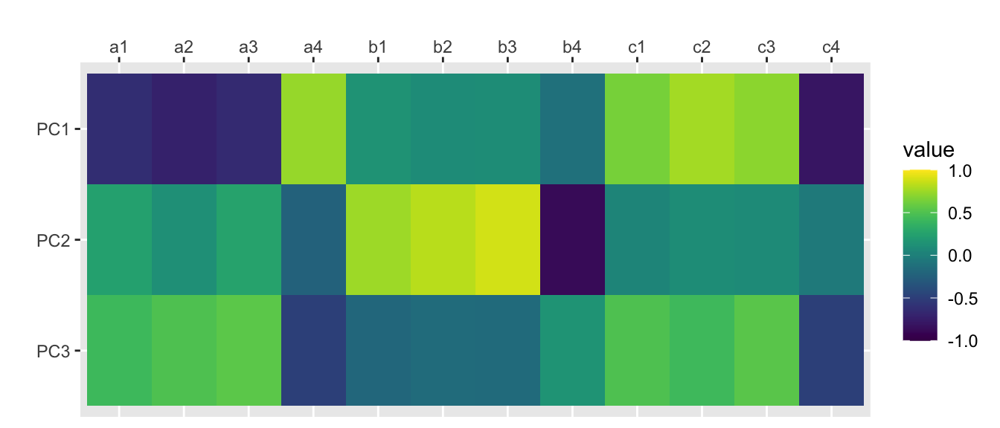
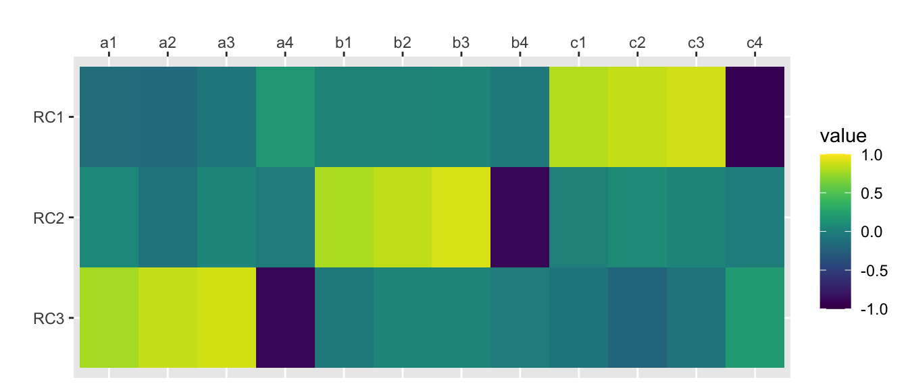
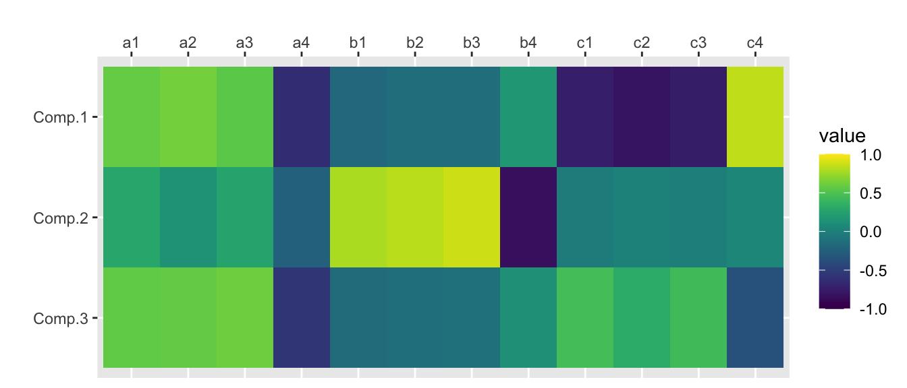
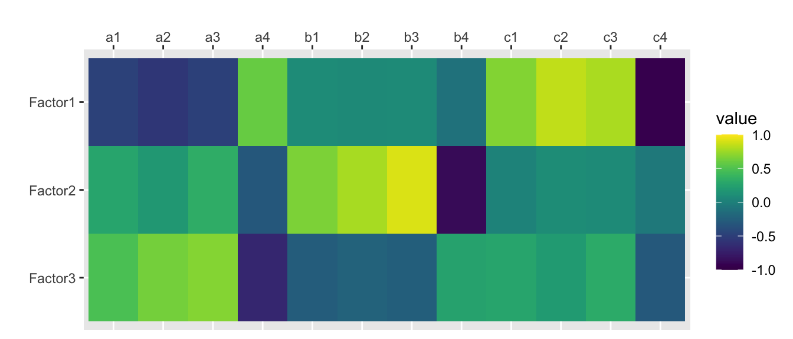
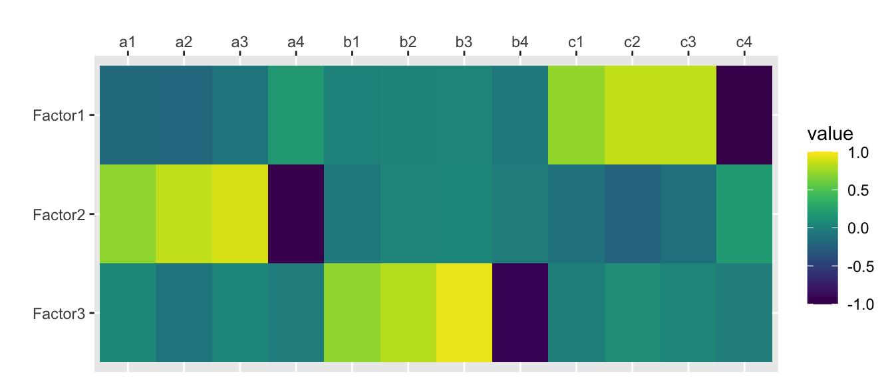
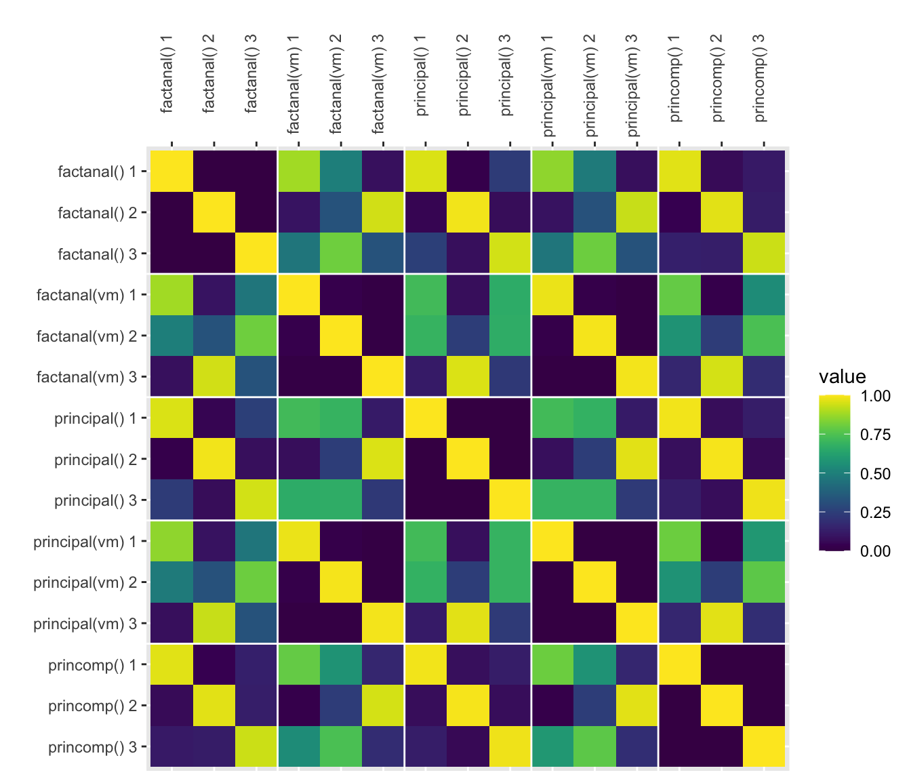

library(tidyverse)
library(psych)
library(viridis)Download the Rmd notebook for this example
Putting together this page made me realise I still don’t know anything about PCA and factor analysis.
I use the psych package for SPSS-style PCA.
First, I’ll simulate some data with an underlying structure of three factors.
set.seed(444) # for reproducibility; delete when running simulations
a <- rnorm(100, 0, 1)
b <- rnorm(100, 0, 1)
c <- rnorm(100, 0, 1)
df <- data.frame(
id = seq(1,100),
a1 = a + rnorm(100, 0, 1),
a2 = a + rnorm(100, 0, .8),
a3 = a + rnorm(100, 0, .6),
a4 = -a + rnorm(100, 0, .4),
b1 = b + rnorm(100, 0, 1),
b2 = b + rnorm(100, 0, .8),
b3 = b + rnorm(100, 0, .6),
b4 = -b + rnorm(100, 0, .4),
c1 = c + rnorm(100, 0, 1),
c2 = c + rnorm(100, 0, .8),
c3 = c + rnorm(100, 0, .6),
c4 = -c + rnorm(100, 0, .4)
)Select just the columns you want for your PCA. You can visualise their correlations with cor() and ggplot().
traits <- df %>% select(-id)
traits %>%
cor() %>%
as.data.frame() %>%
mutate(var1 = rownames(.)) %>%
gather("var2", "value", a1:c4) %>%
mutate(var1 = factor(var1), var1 = factor(var1, levels = rev(levels(var1)))) %>%
ggplot(aes(var2, var1, fill=value)) +
geom_tile() +
scale_x_discrete(position = "top") +
xlab("") + ylab("") +
scale_fill_viridis(limits=c(-1, 1))
Determine the number of factors to extract. Here I use the SPSS-style default criterion of Eigenvalues > 1
ev <- eigen(cor(traits));
nfactors <- length(ev$values[ev$values > 1]);
nfactors[1] 3Principal components analysis (SPSS-style)
principal(rotation = “none”)
traits.principal <- principal(traits, nfactors=nfactors, rotate="none", scores=TRUE)
traits.principalPrincipal Components Analysis
Call: principal(r = traits, nfactors = nfactors, rotate = "none", scores = TRUE)
Standardized loadings (pattern matrix) based upon correlation matrix
PC1 PC2 PC3 h2 u2 com
a1 -0.63 0.24 0.42 0.63 0.37 2.1
a2 -0.72 0.12 0.50 0.77 0.23 1.8
a3 -0.65 0.26 0.55 0.79 0.21 2.3
a4 0.73 -0.23 -0.49 0.83 0.17 2.0
b1 0.14 0.75 -0.19 0.62 0.38 1.2
b2 0.09 0.83 -0.16 0.71 0.29 1.1
b3 0.10 0.89 -0.16 0.83 0.17 1.1
b4 -0.12 -0.88 0.15 0.81 0.19 1.1
c1 0.64 0.04 0.50 0.66 0.34 1.9
c2 0.77 0.10 0.42 0.78 0.22 1.6
c3 0.70 0.08 0.54 0.79 0.21 1.9
c4 -0.80 -0.04 -0.49 0.88 0.12 1.7
PC1 PC2 PC3
SS loadings 4.05 3.02 2.03
Proportion Var 0.34 0.25 0.17
Cumulative Var 0.34 0.59 0.76
Proportion Explained 0.45 0.33 0.22
Cumulative Proportion 0.45 0.78 1.00
Mean item complexity = 1.6
Test of the hypothesis that 3 components are sufficient.
The root mean square of the residuals (RMSR) is 0.05
with the empirical chi square 33.59 with prob < 0.44
Fit based upon off diagonal values = 0.98scores.principal <- traits.principal$scorescor(scores.principal, traits) %>%
as.data.frame() %>%
mutate(var1 = rownames(.)) %>%
gather("var2", "value", a1:c4) %>%
mutate(var1 = factor(var1), var1 = factor(var1, levels = rev(levels(var1)))) %>%
ggplot(aes(var2, var1, fill=value)) +
geom_tile() +
scale_x_discrete(position = "top") +
xlab("") + ylab("") +
scale_fill_viridis(limits=c(-1, 1))
principal(rotation = “varimax”)
traits.varimax <- principal(traits, nfactors=nfactors, rotate="varimax", scores=TRUE)
traits.varimaxPrincipal Components Analysis
Call: principal(r = traits, nfactors = nfactors, rotate = "varimax",
scores = TRUE)
Standardized loadings (pattern matrix) based upon correlation matrix
RC1 RC3 RC2 h2 u2 com
a1 -0.15 0.78 0.06 0.63 0.37 1.1
a2 -0.16 0.86 -0.09 0.77 0.23 1.1
a3 -0.07 0.89 0.05 0.79 0.21 1.0
a4 0.17 -0.90 -0.02 0.83 0.17 1.1
b1 0.03 -0.05 0.79 0.62 0.38 1.0
b2 0.02 0.03 0.84 0.71 0.29 1.0
b3 0.03 0.05 0.91 0.83 0.17 1.0
b4 -0.05 -0.03 -0.90 0.81 0.19 1.0
c1 0.81 -0.08 0.00 0.66 0.34 1.0
c2 0.85 -0.21 0.09 0.78 0.22 1.1
c3 0.88 -0.09 0.04 0.79 0.21 1.0
c4 -0.92 0.20 -0.02 0.88 0.12 1.1
RC1 RC3 RC2
SS loadings 3.09 3.03 2.98
Proportion Var 0.26 0.25 0.25
Cumulative Var 0.26 0.51 0.76
Proportion Explained 0.34 0.33 0.33
Cumulative Proportion 0.34 0.67 1.00
Mean item complexity = 1
Test of the hypothesis that 3 components are sufficient.
The root mean square of the residuals (RMSR) is 0.05
with the empirical chi square 33.59 with prob < 0.44
Fit based upon off diagonal values = 0.98scores.varimax <- traits.varimax$scorescor(scores.varimax, traits) %>%
as.data.frame() %>%
mutate(var1 = rownames(.)) %>%
gather("var2", "value", a1:c4) %>%
mutate(var1 = factor(var1), var1 = factor(var1, levels = rev(levels(var1)))) %>%
ggplot(aes(var2, var1, fill=value)) +
geom_tile() +
scale_x_discrete(position = "top") +
xlab("") + ylab("") +
scale_fill_viridis(limits=c(-1, 1))
Here are some other functions for PCA/Factor Analysis
princomp()
traits.princomp <- princomp(traits)
traits.princomp$loadings[,1:nfactors] Comp.1 Comp.2 Comp.3
a1 0.33006521 0.181709692 0.45906811
a2 0.29151833 0.067518916 0.38086462
a3 0.23950762 0.132057875 0.38289101
a4 -0.25823681 -0.112938603 -0.32926216
b1 -0.10631062 0.507810878 -0.12639281
b2 -0.07370167 0.500188081 -0.09771759
b3 -0.06894907 0.491029731 -0.08032005
b4 0.07460353 -0.426344256 0.07374535
c1 -0.44100481 -0.021914387 0.38825383
c2 -0.42646359 0.010511567 0.23488306
c3 -0.35757417 -0.001802824 0.29574993
c4 0.38827130 0.026358392 -0.24163371scores.princomp <- traits.princomp$scores[,1:nfactors]cor(scores.princomp, traits) %>%
as.data.frame() %>%
mutate(var1 = rownames(.)) %>%
gather("var2", "value", a1:c4) %>%
mutate(var1 = factor(var1), var1 = factor(var1, levels = rev(levels(var1)))) %>%
ggplot(aes(var2, var1, fill=value)) +
geom_tile() +
scale_x_discrete(position = "top") +
xlab("") + ylab("") +
scale_fill_viridis(limits=c(-1, 1))
factanal(rotation = “none”)
traits.fa <- factanal(traits, nfactors, rotation="none", scores="regression")
print(traits.fa, digits=2, cutoff=0, sort=FALSE)
Call:
factanal(x = traits, factors = nfactors, scores = "regression", rotation = "none")
Uniquenesses:
a1 a2 a3 a4 b1 b2 b3 b4 c1 c2 c3 c4
0.52 0.32 0.26 0.18 0.53 0.40 0.18 0.23 0.50 0.27 0.32 0.08
Loadings:
Factor1 Factor2 Factor3
a1 -0.46 0.26 0.45
a2 -0.55 0.17 0.60
a3 -0.47 0.32 0.64
a4 0.57 -0.30 -0.64
b1 0.09 0.63 -0.25
b2 0.07 0.74 -0.21
b3 0.08 0.87 -0.24
b4 -0.10 -0.84 0.24
c1 0.66 0.03 0.25
c2 0.83 0.09 0.19
c3 0.77 0.08 0.29
c4 -0.92 -0.05 -0.28
Factor1 Factor2 Factor3
SS loadings 3.65 2.71 1.86
Proportion Var 0.30 0.23 0.16
Cumulative Var 0.30 0.53 0.68
Test of the hypothesis that 3 factors are sufficient.
The chi square statistic is 22.21 on 33 degrees of freedom.
The p-value is 0.923 scores.fa <- traits.fa$scorescor(scores.fa, traits) %>%
as.data.frame() %>%
mutate(var1 = rownames(.)) %>%
gather("var2", "value", a1:c4) %>%
mutate(var1 = factor(var1), var1 = factor(var1, levels = rev(levels(var1)))) %>%
ggplot(aes(var2, var1, fill=value)) +
geom_tile() +
scale_x_discrete(position = "top") +
xlab("") + ylab("") +
scale_fill_viridis(limits=c(-1, 1))
factanal(rotation = “varimax”)
traits.fa.vm <- factanal(traits, nfactors, rotation="varimax", scores="regression")
print(traits.fa.vm, digits=2, cutoff=0, sort=FALSE)
Call:
factanal(x = traits, factors = nfactors, scores = "regression", rotation = "varimax")
Uniquenesses:
a1 a2 a3 a4 b1 b2 b3 b4 c1 c2 c3 c4
0.52 0.32 0.26 0.18 0.53 0.40 0.18 0.23 0.50 0.27 0.32 0.08
Loadings:
Factor1 Factor2 Factor3
a1 -0.16 0.67 0.06
a2 -0.18 0.80 -0.08
a3 -0.08 0.85 0.05
a4 0.17 -0.89 -0.03
b1 0.02 -0.04 0.68
b2 0.03 0.04 0.77
b3 0.04 0.05 0.91
b4 -0.05 -0.03 -0.87
c1 0.70 -0.10 0.00
c2 0.82 -0.21 0.09
c3 0.82 -0.11 0.04
c4 -0.94 0.19 -0.02
Factor1 Factor2 Factor3
SS loadings 2.82 2.73 2.67
Proportion Var 0.23 0.23 0.22
Cumulative Var 0.23 0.46 0.68
Test of the hypothesis that 3 factors are sufficient.
The chi square statistic is 22.21 on 33 degrees of freedom.
The p-value is 0.923 scores.fa.vm <- traits.fa.vm$scorescor(scores.fa.vm, traits) %>%
as.data.frame() %>%
mutate(var1 = rownames(.)) %>%
gather("var2", "value", a1:c4) %>%
mutate(var1 = factor(var1), var1 = factor(var1, levels = rev(levels(var1)))) %>%
ggplot(aes(var2, var1, fill=value)) +
geom_tile() +
scale_x_discrete(position = "top") +
xlab("") + ylab("") +
scale_fill_viridis(limits=c(-1, 1))
How do they compare?
Here, I’ll plot the absolute value of all the correlations (since the sign on factors/PCs is arbitrary).
The functions principal(rotation = “varimax”) and factanal(rotation = “varimax”) are nearly (but not perfectly) identical.
scores.fa <- traits.fa$scores
colnames(scores.principal) <- c("principal() 1", "principal() 2", "principal() 3")
colnames(scores.varimax) <- c("principal(vm) 1", "principal(vm) 2", "principal(vm) 3")
colnames(scores.princomp) <- c("princomp() 1", "princomp() 2", "princomp() 3")
colnames(scores.fa) <- c("factanal() 1", "factanal() 2", "factanal() 3")
colnames(scores.fa.vm) <- c("factanal(vm) 1", "factanal(vm) 2", "factanal(vm) 3")
cbind(
scores.princomp,
scores.principal,
scores.fa,
scores.varimax,
scores.fa.vm
) %>%
cor() %>%
as.data.frame() %>%
mutate(var1 = rownames(.)) %>%
gather("var2", "value", 1:15) %>%
mutate(var1 = factor(var1), var1 = factor(var1, levels = rev(levels(var1)))) %>%
mutate(value = abs(value)) %>%
ggplot(aes(var2, var1, fill=value)) +
geom_tile() +
scale_x_discrete(position = "top") +
xlab("") + ylab("") +
scale_fill_viridis(limits=c(0, 1)) +
geom_hline(yintercept = 3.5, color="white") +
geom_hline(yintercept = 6.5, color="white") +
geom_hline(yintercept = 9.5, color="white") +
geom_hline(yintercept = 12.5, color="white") +
geom_vline(xintercept = 3.5, color="white") +
geom_vline(xintercept = 6.5, color="white") +
geom_vline(xintercept = 9.5, color="white") +
geom_vline(xintercept = 12.5, color="white") +
theme(axis.text.x=element_text(angle=90,hjust=1))